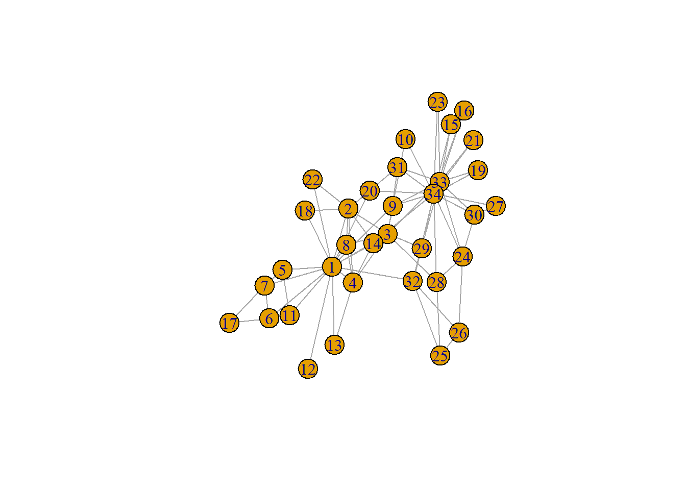
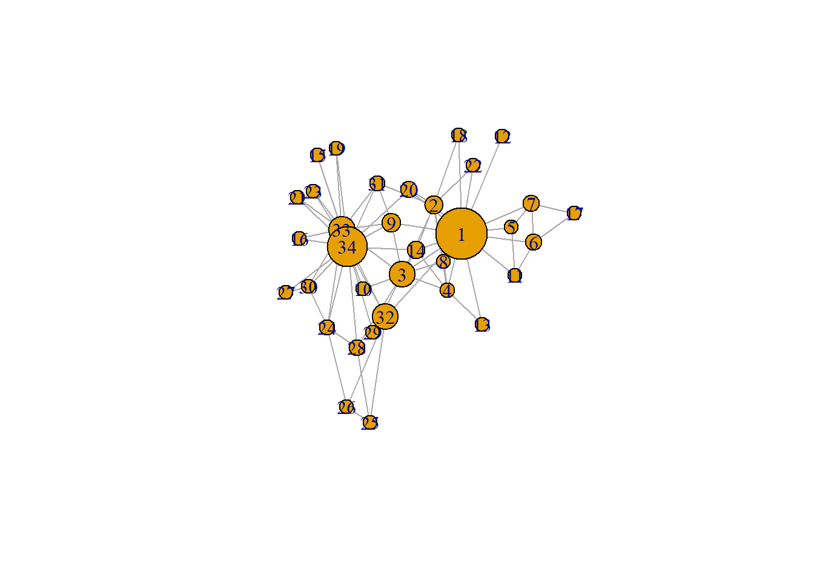
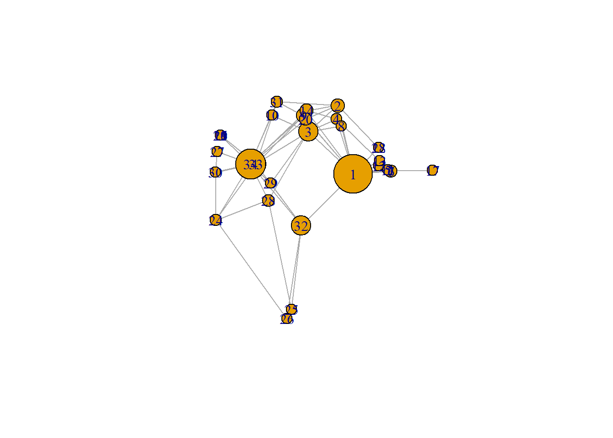
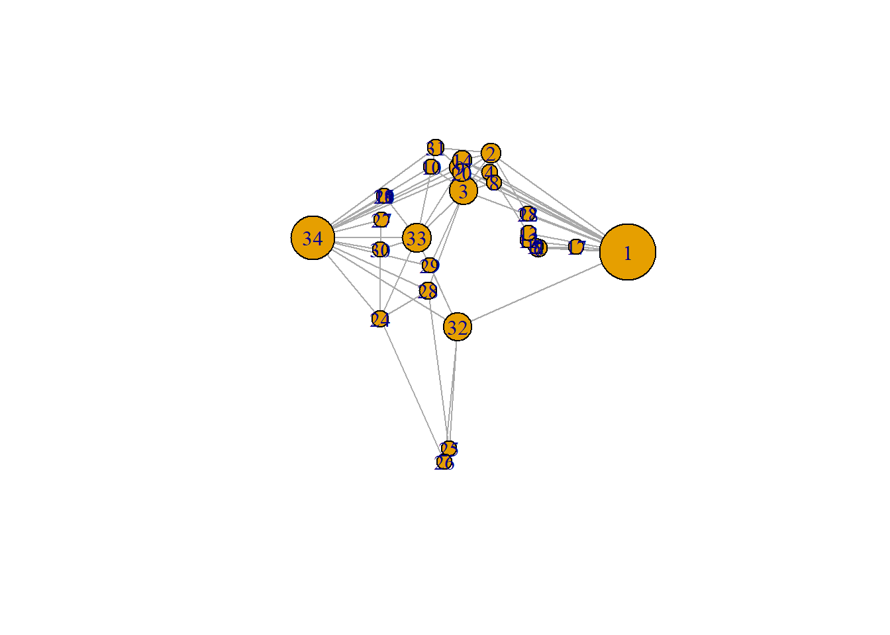

lab4
Paige Kemper
2025-09-16
Last compiled on October, 2025
1 DURING CLASS:
1.1 sample using igraph
require(igraph)
g <- make_graph("Zachary")
plot(g)
# measures of centrality
# degrees - is the most simple term for centrality is the degrees of connections
# if want to describe network, what dimensions describe? if it is complete, the size of it, what kind of relationship (un/directed), if the tie is weighed (and the node type)
# So: degree centrality, then bridges -- so, if the story is that there are differences in degree centrality, could illustrate nodes by differing sizeNote: Measures of centrality: Degrees - is the most simple term for centrality is the degrees of connection.
If want to describe network, what dimensions describe? - If it is complete, the size of it, what kind of relationship (un/directed), if the tie is weighed (and the node type)
So: degree centrality, then bridges – if the story is that there are differences in degree centrality, could illustrate nodes by differing size for example.
1.2 Local transitivity
gmat <- as_adjacency_matrix(g, type = "both", sparse = FALSE)
gmat#> [,1] [,2] [,3] [,4] [,5] [,6] [,7] [,8] [,9] [,10] [,11] [,12] [,13] [,14] [,15] [,16] [,17]
#> [1,] 0 1 1 1 1 1 1 1 1 0 1 1 1 1 0 0 0
#> [2,] 1 0 1 1 0 0 0 1 0 0 0 0 0 1 0 0 0
#> [3,] 1 1 0 1 0 0 0 1 1 1 0 0 0 1 0 0 0
#> [4,] 1 1 1 0 0 0 0 1 0 0 0 0 1 1 0 0 0
#> [5,] 1 0 0 0 0 0 1 0 0 0 1 0 0 0 0 0 0
#> [6,] 1 0 0 0 0 0 1 0 0 0 1 0 0 0 0 0 1
#> [7,] 1 0 0 0 1 1 0 0 0 0 0 0 0 0 0 0 1
#> [8,] 1 1 1 1 0 0 0 0 0 0 0 0 0 0 0 0 0
#> [9,] 1 0 1 0 0 0 0 0 0 0 0 0 0 0 0 0 0
#> [10,] 0 0 1 0 0 0 0 0 0 0 0 0 0 0 0 0 0
#> [11,] 1 0 0 0 1 1 0 0 0 0 0 0 0 0 0 0 0
#> [12,] 1 0 0 0 0 0 0 0 0 0 0 0 0 0 0 0 0
#> [13,] 1 0 0 1 0 0 0 0 0 0 0 0 0 0 0 0 0
#> [14,] 1 1 1 1 0 0 0 0 0 0 0 0 0 0 0 0 0
#> [15,] 0 0 0 0 0 0 0 0 0 0 0 0 0 0 0 0 0
#> [16,] 0 0 0 0 0 0 0 0 0 0 0 0 0 0 0 0 0
#> [17,] 0 0 0 0 0 1 1 0 0 0 0 0 0 0 0 0 0
#> [18,] 1 1 0 0 0 0 0 0 0 0 0 0 0 0 0 0 0
#> [19,] 0 0 0 0 0 0 0 0 0 0 0 0 0 0 0 0 0
#> [20,] 1 1 0 0 0 0 0 0 0 0 0 0 0 0 0 0 0
#> [21,] 0 0 0 0 0 0 0 0 0 0 0 0 0 0 0 0 0
#> [22,] 1 1 0 0 0 0 0 0 0 0 0 0 0 0 0 0 0
#> [23,] 0 0 0 0 0 0 0 0 0 0 0 0 0 0 0 0 0
#> [24,] 0 0 0 0 0 0 0 0 0 0 0 0 0 0 0 0 0
#> [25,] 0 0 0 0 0 0 0 0 0 0 0 0 0 0 0 0 0
#> [26,] 0 0 0 0 0 0 0 0 0 0 0 0 0 0 0 0 0
#> [27,] 0 0 0 0 0 0 0 0 0 0 0 0 0 0 0 0 0
#> [28,] 0 0 1 0 0 0 0 0 0 0 0 0 0 0 0 0 0
#> [29,] 0 0 1 0 0 0 0 0 0 0 0 0 0 0 0 0 0
#> [30,] 0 0 0 0 0 0 0 0 0 0 0 0 0 0 0 0 0
#> [31,] 0 1 0 0 0 0 0 0 1 0 0 0 0 0 0 0 0
#> [32,] 1 0 0 0 0 0 0 0 0 0 0 0 0 0 0 0 0
#> [33,] 0 0 1 0 0 0 0 0 1 0 0 0 0 0 1 1 0
#> [34,] 0 0 0 0 0 0 0 0 1 1 0 0 0 1 1 1 0
#> [,18] [,19] [,20] [,21] [,22] [,23] [,24] [,25] [,26] [,27] [,28] [,29] [,30] [,31] [,32]
#> [1,] 1 0 1 0 1 0 0 0 0 0 0 0 0 0 1
#> [2,] 1 0 1 0 1 0 0 0 0 0 0 0 0 1 0
#> [3,] 0 0 0 0 0 0 0 0 0 0 1 1 0 0 0
#> [4,] 0 0 0 0 0 0 0 0 0 0 0 0 0 0 0
#> [5,] 0 0 0 0 0 0 0 0 0 0 0 0 0 0 0
#> [6,] 0 0 0 0 0 0 0 0 0 0 0 0 0 0 0
#> [7,] 0 0 0 0 0 0 0 0 0 0 0 0 0 0 0
#> [8,] 0 0 0 0 0 0 0 0 0 0 0 0 0 0 0
#> [9,] 0 0 0 0 0 0 0 0 0 0 0 0 0 1 0
#> [10,] 0 0 0 0 0 0 0 0 0 0 0 0 0 0 0
#> [11,] 0 0 0 0 0 0 0 0 0 0 0 0 0 0 0
#> [12,] 0 0 0 0 0 0 0 0 0 0 0 0 0 0 0
#> [13,] 0 0 0 0 0 0 0 0 0 0 0 0 0 0 0
#> [14,] 0 0 0 0 0 0 0 0 0 0 0 0 0 0 0
#> [15,] 0 0 0 0 0 0 0 0 0 0 0 0 0 0 0
#> [16,] 0 0 0 0 0 0 0 0 0 0 0 0 0 0 0
#> [17,] 0 0 0 0 0 0 0 0 0 0 0 0 0 0 0
#> [18,] 0 0 0 0 0 0 0 0 0 0 0 0 0 0 0
#> [19,] 0 0 0 0 0 0 0 0 0 0 0 0 0 0 0
#> [20,] 0 0 0 0 0 0 0 0 0 0 0 0 0 0 0
#> [21,] 0 0 0 0 0 0 0 0 0 0 0 0 0 0 0
#> [22,] 0 0 0 0 0 0 0 0 0 0 0 0 0 0 0
#> [23,] 0 0 0 0 0 0 0 0 0 0 0 0 0 0 0
#> [24,] 0 0 0 0 0 0 0 0 1 0 1 0 1 0 0
#> [25,] 0 0 0 0 0 0 0 0 1 0 1 0 0 0 1
#> [26,] 0 0 0 0 0 0 1 1 0 0 0 0 0 0 1
#> [27,] 0 0 0 0 0 0 0 0 0 0 0 0 1 0 0
#> [28,] 0 0 0 0 0 0 1 1 0 0 0 0 0 0 0
#> [29,] 0 0 0 0 0 0 0 0 0 0 0 0 0 0 1
#> [30,] 0 0 0 0 0 0 1 0 0 1 0 0 0 0 0
#> [31,] 0 0 0 0 0 0 0 0 0 0 0 0 0 0 0
#> [32,] 0 0 0 0 0 0 0 1 1 0 0 1 0 0 0
#> [33,] 0 1 0 1 0 1 1 0 0 0 0 0 1 1 1
#> [34,] 0 1 1 1 0 1 1 0 0 1 1 1 1 1 1
#> [,33] [,34]
#> [1,] 0 0
#> [2,] 0 0
#> [3,] 1 0
#> [4,] 0 0
#> [5,] 0 0
#> [6,] 0 0
#> [7,] 0 0
#> [8,] 0 0
#> [9,] 1 1
#> [10,] 0 1
#> [11,] 0 0
#> [12,] 0 0
#> [13,] 0 0
#> [14,] 0 1
#> [15,] 1 1
#> [16,] 1 1
#> [17,] 0 0
#> [18,] 0 0
#> [19,] 1 1
#> [20,] 0 1
#> [21,] 1 1
#> [22,] 0 0
#> [23,] 1 1
#> [24,] 1 1
#> [25,] 0 0
#> [26,] 0 0
#> [27,] 0 1
#> [28,] 0 1
#> [29,] 0 1
#> [30,] 1 1
#> [31,] 1 1
#> [32,] 1 1
#> [33,] 0 1
#> [34,] 1 0#THEN - LOOK AT DESCRIPTIVE STATISTICS
#SIZE
# number of nodes
vcount(g)#> [1] 34# number of edges
ecount(g) #> [1] 78#DEGREE
igraph::degree(g)#> [1] 16 9 10 6 3 4 4 4 5 2 3 1 2 5 2 2 2 2 2 3 2 2 2 5 3 3 2 4 3 4 4 6
#> [33] 12 17# hist(table(degree(g)), xlab='indegree', main= 'Histogram of indegree') - every number is the degree level of each actor -- and see it is heavily skewed --
#TRANSITIVITY
# be aware that directed graphs are considered as undirected. but g is undirected.
igraph::transitivity(g, type = c("localundirected"), isolates = c("NaN", "zero")) #differences pop out less #> [1] 0.1500000 0.3333333 0.2444444 0.6666667 0.6666667 0.5000000 0.5000000 1.0000000 0.5000000
#> [10] 0.0000000 0.6666667 NaN 1.0000000 0.6000000 1.0000000 1.0000000 1.0000000 1.0000000
#> [19] 1.0000000 0.3333333 1.0000000 1.0000000 1.0000000 0.4000000 0.3333333 0.3333333 1.0000000
#> [28] 0.1666667 0.3333333 0.6666667 0.5000000 0.2000000 0.1969697 0.1102941#BETWEENNES
# be aware that directed graphs are considered as undirected. but g is undirected.
igraph::transitivity(g, type = c("localundirected"), isolates = c("NaN", "zero"))#> [1] 0.1500000 0.3333333 0.2444444 0.6666667 0.6666667 0.5000000 0.5000000 1.0000000 0.5000000
#> [10] 0.0000000 0.6666667 NaN 1.0000000 0.6000000 1.0000000 1.0000000 1.0000000 1.0000000
#> [19] 1.0000000 0.3333333 1.0000000 1.0000000 1.0000000 0.4000000 0.3333333 0.3333333 1.0000000
#> [28] 0.1666667 0.3333333 0.6666667 0.5000000 0.2000000 0.1969697 0.1102941 # with this we see big differences in transivity and betweenness1.3 Global transitivity
Next, moving from local to global transitivity - look at triads. Global transitivity below.
Note: reviewing dyad - then triad - and since it is undirected, it is less difficult to calculate. Now, triad census vs triad allegation. Global: number of observed over possible - can identify all transitive triads and all possible triads.
# Had to comment this out to get it to knit ?
#igraph::dyad.census(g)
#igraph::triad.census(g)
# I will use sna because it shows the names of the triads as well.
#install.packages("sna")
#library(sna)
#sna::triad.census(gmat)
#unloadNamespace("sna") #I will detach this package again, otherwise it will interfere with all kind of functions from igraph, and my students will hate me for that.
####
igraph::transitivity(g, type = "global")#> [1] 0.2556818sna::gtrans(gmat) #triad census a different way #> [1] 0.2556818triad_g <- data.frame(sna::triad.census(gmat)) #save as df
transitivity_g <- (3 * triad_g$X300)/(triad_g$X201 + 3 * triad_g$X300) #X300 is variable for transitive triad (the fully closed triad)
# we multiply by 3 because there are 3 possible transitive triads
transitivity_g#> [1] 0.25568181.4 Network visualization: Let’s make size proportional to betweeness score
# changing V
V(g)$size = betweenness(g, normalized = T, directed = FALSE) * 60 + 10 #after some trial and error
## multiplication - changing 60 changes the difference in size,, adding 10 makes the smallest visible
plot(g, mode = "undirected")
1.5 Reduce overlap
Goal: I want to hold printing device constant, and then reduce overlap. To do this, the idea is to push least central egos out.
# igraph, want no pverlap - igraph plotting no overlap -- a lot of layout functions -- want to hold printing device constant, and then reduce overlap...the idea is to push least central egos out
set.seed(2345)
l <- layout_with_mds(g) #https://igraph.org/r/doc/layout_with_mds.html
plot(g, layout = l)
# story in second plot: 3 clusters, around 1, around 34 - and in between (which wasn't as clear before)1.5.1 Can also do this manually
can save coordinates of layout, and then tweak coordinates ourself - but that is no longer an objective layout function
l #let us take a look at the coordinates -- and now we save them#> [,1] [,2]
#> [1,] 1.070931935 -0.172458113
#> [2,] 0.732844464 0.754023309
#> [3,] 0.100582299 0.397693607
#> [4,] 0.708246655 0.570205545
#> [5,] 1.816293170 -0.120778206
#> [6,] 1.881329566 -0.135518854
#> [7,] 1.881329566 -0.135518854
#> [8,] 0.812606714 0.472619437
#> [9,] -0.003769996 0.615513628
#> [10,] -0.685680315 0.621065149
#> [11,] 1.816293170 -0.120778206
#> [12,] 1.621247830 -0.065820692
#> [13,] 1.637845123 0.001789972
#> [14,] 0.067317230 0.681421148
#> [15,] -1.796316404 0.351417630
#> [16,] -1.796316404 0.351417630
#> [17,] 2.775260452 -0.124317652
#> [18,] 1.616210024 0.182510197
#> [19,] -1.796316404 0.351417630
#> [20,] 0.048362858 0.566654982
#> [21,] -1.796316404 0.351417630
#> [22,] 1.616210024 0.182510197
#> [23,] -1.796316404 0.351417630
#> [24,] -1.891240567 -0.799574907
#> [25,] -0.258345165 -2.006346563
#> [26,] -0.360530857 -2.131642875
#> [27,] -1.865177401 0.128596564
#> [28,] -0.760226022 -0.529392331
#> [29,] -0.710979936 -0.299960128
#> [30,] -1.898426916 -0.149398746
#> [31,] -0.568691923 0.804189411
#> [32,] -0.048136037 -0.870967614
#> [33,] -1.023681000 -0.035802363
#> [34,] -1.146442924 -0.037605192l[1, 1] <- 4
l[34, 1] <- -3.5 # the coordinates are the x and y, and this makes the 1 and the 34 more positive / more negative
plot(g, layout = l)
looking at this, maybe 1, 33 and 34 are instructures, and numbers closer to 1 are more similar to 1 and 34, 34.
1.6 Get final picture
Last step, manipulate data more and get final picture
plot(g, layout = l, margin = c(0, 0, 0, 0))
legend(x = -2, y = -1.5, c("Note: the position of nodes 1 and 34 have been set by Jochem Tolsma \n for visualisation purposes only and do not reflect network properties"),
bty = "n", cex = 0.8)
Other notes
Notes: size —> degree of centrality!
Review of twitter research –
jochemtolsma.github.io/Twitter/figures.html
- Looking at data of parliament from twitter – some type of segmentation by party - coloring the different parties makes it much easier to discern differences. can look at directed / undirected (mutual).
- Then used same plots, differed by algorithm - same colors (party) cluster together - prove to reviewer that algorithm outputs cluster. Take home message: clustering by party. PVV is outlier. proves that there is differing levels of segmentation, too.
Remember: descriptive: macro level, ego, triad, etc. descriptive research question - 50-75% of final project assignment
2 After class:
Codereview 2
3 BEFORE CLASS:
3.1 First Open Alex Attempt
3.1.1 clean workspace
# start with clean workspace
rm(list = ls())3.1.2 Install packages
#install.packages('data.table')
library(data.table) # mainly for faster data handling
library(tidyverse) # I assume you already installed this one!
#install.packages('httr') # we don't need this for now require(httr)
#install.packages("xml2")
require(xml2)
#install.packages("rvest")
require(rvest)
#install.packages("devtools")
require(devtools)
#RSelenium usefull for websites where the data is 'loaded in', rvest cant handle that
#packages: "RSelenium", "rvest", "tidyverse", "netstat", "pingr", "stringr"
#install.packages("RSelenium")
#install.packages("netstat")
#install.packages("pingr")Had to comment this out to knit
# install.packages("RSelenium") #
#install.packages("rvest")
#install.packages("tidyverse")
# install.packages("netstat") # had to comment this out to knit
#install.packages("pingr") # had to comment this out to knit
#install.packages("stringr")# had to comment this out to knit
#install.packages("selenider")# had to comment this out to knit
library(selenider)
library(rvest)
library(tidyverse)
library(netstat)
library(pingr)
library(stringr)rm(list = ls())
fpackage.check <- function(packages) {
lapply(packages, FUN = function(x) {
if (!require(x, character.only = TRUE)) {
install.packages(x, dependencies = TRUE)
library(x, character.only = TRUE)
}
})
}
fsave <- function(x, file = NULL, location = "./data/processed/") {
ifelse(!dir.exists("data"), dir.create("data"), FALSE)
ifelse(!dir.exists("data/processed"), dir.create("data/processed"), FALSE)
if (is.null(file))
file = deparse(substitute(x))
datename <- substr(gsub("[:-]", "", Sys.time()), 1, 8)
totalname <- paste(location, datename, file, ".rda", sep = "")
save(x, file = totalname) #need to fix if file is reloaded as input name, not as x.
}
fload <- function(filename) {
load(filename)
get(ls()[ls() != "filename"])
}
fshowdf <- function(x, ...) {
knitr::kable(x, digits = 2, "html", ...) %>%
kableExtra::kable_styling(bootstrap_options = c("striped", "hover")) %>%
kableExtra::scroll_box(width = "100%", height = "300px")
}3.1.3 Code for attmepting to scrape Open Alex (just radboud)
options(openalexR.mailto = "paige.kemper@ru.nl")
library(openalexR)
df_test <- oa_fetch(entity= "author", search = "Jochem+Tolsma", mailto = "paige.kemper@ru.nl")
df_test#> # A tibble: 1 × 15
#> id display_name display_name_alterna…¹ relevance_score ids orcid works_count cited_by_count
#> <chr> <chr> <list> <dbl> <lis> <chr> <int> <int>
#> 1 https:… Jochem Tols… <chr [3]> 9047. <chr> http… 88 2123
#> # ℹ abbreviated name: ¹display_name_alternatives
#> # ℹ 7 more variables: counts_by_year <list>, `2yr_mean_citedness` <dbl>, h_index <int>,
#> # i10_index <int>, last_known_institutions <list>, topics <list>, works_api_url <chr>Had to comment out following code to knit
require(openalexR)
fshowdf(df_test) # had to comment this out to knit| id | display_name | display_name_alternatives | relevance_score | ids | orcid | works_count | cited_by_count | counts_by_year | 2yr_mean_citedness | h_index | i10_index | last_known_institutions | topics | works_api_url |
|---|---|---|---|---|---|---|---|---|---|---|---|---|---|---|
| https://openalex.org/A5087380803 | Jochem Tolsma | J. Tolsma , Jochem Tolsma, J L Tolsma | 9047.11 | https://openalex.org/A5087380803 , https://orcid.org/0000-0002-4411-6932 | https://orcid.org/0000-0002-4411-6932 | 88 | 2123 | 2025, 2024, 2023, 2022, 2021, 2020, 2019, 2018, 2017, 2016, 2015, 2014, 2013, 2012, 3, 9, 5, 4, 4, 0, 4, 3, 3, 13, 4, 8, 6, 2, 1, 6, 4, 4, 4, 0, 3, 3, 2, 6, 3, 4, 4, 2, 181, 269, 255, 192, 245, 221, 179, 180, 114, 168, 135, 99, 77, 51 | 2.89 | 22 | 37 | https://openalex.org/I169381384, https://openalex.org/I145872427, https://ror.org/012p63287 , https://ror.org/016xsfp80 , University of Groningen , Radboud University Nijmegen , NL , NL , funder , funder , https://openalex.org/I169381384, https://openalex.org/I145872427 | 1 , 1 , 1 , 1 , 2 , 2 , 2 , 2 , 3 , 3 , 3 , 3 , 4 , 4 , 4 , 4 , 5 , 5 , 5 , 5 , 6 , 6 , 6 , 6 , 7 , 7 , 7 , 7 , 8 , 8 , 8 , 8 , 9 , 9 , 9 , 9 , 10 , 10 , 10 , 10 , 11 , 11 , 11 , 11 , 12 , 12 , 12 , 12 , 13 , 13 , 13 , 13 , 14 , 14 , 14 , 14 , 15 , 15 , 15 , 15 , 16 , 16 , 16 , 16 , 17 , 17 , 17 , 17 , 18 , 18 , 18 , 18 , 19 , 19 , 19 , 19 , 20 , 20 , 20 , 20 , 21 , 21 , 21 , 21 , 22 , 22 , 22 , 22 , 23 , 23 , 23 , 23 , 24 , 24 , 24 , 24 , 25 , 25 , 25 , 25 , 15 , 15 , 15 , 15 , 12 , 12 , 12 , 12 , 10 , 10 , 10 , 10 , 10 , 10 , 10 , 10 , 10 , 10 , 10 , 10 , 8 , 8 , 8 , 8 , 7 , 7 , 7 , 7 , 7 , 7 , 7 , 7 , 7 , 7 , 7 , 7 , 6 , 6 , 6 , 6 , 5 , 5 , 5 , 5 , 5 , 5 , 5 , 5 , 4 , 4 , 4 , 4 , 4 , 4 , 4 , 4 , 4 , 4 , 4 , 4 , 4 , 4 , 4 , 4 , 4 , 4 , 4 , 4 , 4 , 4 , 4 , 4 , 3 , 3 , 3 , 3 , 3 , 3 , 3 , 3 , 3 , 3 , 3 , 3 , 3 , 3 , 3 , 3 , 3 , 3 , 3 , 3 , 3 , 3 , 3 , 3 , 2 , 2 , 2 , 2 , https://openalex.org/T11239 , https://openalex.org/subfields/3312 , https://openalex.org/fields/33 , https://openalex.org/domains/2 , https://openalex.org/T11645 , https://openalex.org/subfields/3312 , https://openalex.org/fields/33 , https://openalex.org/domains/2 , https://openalex.org/T10108 , https://openalex.org/subfields/3320 , https://openalex.org/fields/33 , https://openalex.org/domains/2 , https://openalex.org/T10314 , https://openalex.org/subfields/3312 , https://openalex.org/fields/33 , https://openalex.org/domains/2 , https://openalex.org/T12088 , https://openalex.org/subfields/3312 , https://openalex.org/fields/33 , https://openalex.org/domains/2 , https://openalex.org/T10349 , https://openalex.org/subfields/3312 , https://openalex.org/fields/33 , https://openalex.org/domains/2 , https://openalex.org/T10216 , https://openalex.org/subfields/3312 , https://openalex.org/fields/33 , https://openalex.org/domains/2 , https://openalex.org/T10235 , https://openalex.org/subfields/3306 , https://openalex.org/fields/33 , https://openalex.org/domains/2 , https://openalex.org/T10557 , https://openalex.org/subfields/3315 , https://openalex.org/fields/33 , https://openalex.org/domains/2 , https://openalex.org/T13064 , https://openalex.org/subfields/3304 , https://openalex.org/fields/33 , https://openalex.org/domains/2 , https://openalex.org/T10574 , https://openalex.org/subfields/3312 , https://openalex.org/fields/33 , https://openalex.org/domains/2 , https://openalex.org/T10762 , https://openalex.org/subfields/3203 , https://openalex.org/fields/32 , https://openalex.org/domains/2 , https://openalex.org/T10843 , https://openalex.org/subfields/3318 , https://openalex.org/fields/33 , https://openalex.org/domains/2 , https://openalex.org/T11397 , https://openalex.org/subfields/3320 , https://openalex.org/fields/33 , https://openalex.org/domains/2 , https://openalex.org/T10443 , https://openalex.org/subfields/3320 , https://openalex.org/fields/33 , https://openalex.org/domains/2 , https://openalex.org/T13709 , https://openalex.org/subfields/3304 , https://openalex.org/fields/33 , https://openalex.org/domains/2 , https://openalex.org/T10674 , https://openalex.org/subfields/3304 , https://openalex.org/fields/33 , https://openalex.org/domains/2 , https://openalex.org/T12592 , https://openalex.org/subfields/3109 , https://openalex.org/fields/31 , https://openalex.org/domains/3 , https://openalex.org/T10652 , https://openalex.org/subfields/3312 , https://openalex.org/fields/33 , https://openalex.org/domains/2 , https://openalex.org/T10208 , https://openalex.org/subfields/2002 , https://openalex.org/fields/20 , https://openalex.org/domains/2 , https://openalex.org/T11076 , https://openalex.org/subfields/3320 , https://openalex.org/fields/33 , https://openalex.org/domains/2 , https://openalex.org/T10064 , https://openalex.org/subfields/3109 , https://openalex.org/fields/31 , https://openalex.org/domains/3 , https://openalex.org/T10182 , https://openalex.org/subfields/3203 , https://openalex.org/fields/32 , https://openalex.org/domains/2 , https://openalex.org/T13532 , https://openalex.org/subfields/3304 , https://openalex.org/fields/33 , https://openalex.org/domains/2 , https://openalex.org/T11895 , https://openalex.org/subfields/3312 , https://openalex.org/fields/33 , https://openalex.org/domains/2 , Social Capital and Networks , Sociology and Political Science , Social Sciences , Social Sciences , Urban, Neighborhood, and Segregation Studies , Sociology and Political Science , Social Sciences , Social Sciences , Electoral Systems and Political Participation , Political Science and International Relations , Social Sciences , Social Sciences , Social and Intergroup Psychology , Sociology and Political Science , Social Sciences , Social Sciences , Intergenerational and Educational Inequality Studies , Sociology and Political Science , Social Sciences , Social Sciences , Migration and Labor Dynamics , Sociology and Political Science , Social Sciences , Social Sciences , Migration, Refugees, and Integration , Sociology and Political Science , Social Sciences , Social Sciences , Health disparities and outcomes , Health , Social Sciences , Social Sciences , Social Media and Politics , Communication , Social Sciences , Social Sciences , Dutch Social and Cultural Studies , Education , Social Sciences , Social Sciences , Crime Patterns and Interventions , Sociology and Political Science , Social Sciences , Social Sciences , Migration, Health and Trauma , Clinical Psychology , Psychology , Social Sciences , Diversity and Career in Medicine , Gender Studies , Social Sciences , Social Sciences , Populism, Right-Wing Movements , Political Science and International Relations , Social Sciences , Social Sciences , Social Policy and Reform Studies , Political Science and International Relations , Social Sciences , Social Sciences , Education in Diverse Contexts , Education , Social Sciences , Social Sciences , School Choice and Performance , Education , Social Sciences , Social Sciences , Opinion Dynamics and Social Influence , Statistical and Nonlinear Physics , Physics and Astronomy , Physical Sciences , Racial and Ethnic Identity Research , Sociology and Political Science , Social Sciences , Social Sciences , Labor market dynamics and wage inequality , Economics and Econometrics , Economics, Econometrics and Finance , Social Sciences , Policing Practices and Perceptions , Political Science and International Relations , Social Sciences , Social Sciences , Complex Network Analysis Techniques , Statistical and Nonlinear Physics , Physics and Astronomy , Physical Sciences , Child and Adolescent Psychosocial and Emotional Development, Clinical Psychology , Psychology , Social Sciences , Education Systems and Policy , Education , Social Sciences , Social Sciences , Social and Cultural Dynamics , Sociology and Political Science , Social Sciences , Social Sciences , topic , subfield , field , domain , topic , subfield , field , domain , topic , subfield , field , domain , topic , subfield , field , domain , topic , subfield , field , domain , topic , subfield , field , domain , topic , subfield , field , domain , topic , subfield , field , domain , topic , subfield , field , domain , topic , subfield , field , domain , topic , subfield , field , domain , topic , subfield , field , domain , topic , subfield , field , domain , topic , subfield , field , domain , topic , subfield , field , domain , topic , subfield , field , domain , topic , subfield , field , domain , topic , subfield , field , domain , topic , subfield , field , domain , topic , subfield , field , domain , topic , subfield , field , domain , topic , subfield , field , domain , topic , subfield , field , domain , topic , subfield , field , domain , topic , subfield , field , domain | https://api.openalex.org/works?filter=author.id:A5087380803 |
# test finding radboud university institution in Open Alex
df_ru <-oa_fetch(entity = "institution", search = "Radboud+University+Nijmegen", mailto="paige.kemper@ru.nl") #author.id = df_test$id)
df_ru#> # A tibble: 2 × 23
#> id display_name display_name_alterna…¹ display_name_acronyms international_displa…² ror ids
#> <chr> <chr> <list> <list> <list> <chr> <lis>
#> 1 http… Radboud Uni… <chr [3]> <lgl [1]> <chr [50]> http… <chr>
#> 2 http… Radboud Uni… <chr [2]> <chr [1]> <chr [10]> http… <chr>
#> # ℹ abbreviated names: ¹display_name_alternatives, ²international_display_name
#> # ℹ 16 more variables: country_code <chr>, geo <list>, type <chr>, homepage_url <chr>,
#> # image_url <chr>, image_thumbnail_url <chr>, associated_institutions <list>,
#> # relevance_score <dbl>, works_count <int>, cited_by_count <int>, counts_by_year <list>,
#> # summary_stats <list>, works_api_url <chr>, topics <list>, updated_date <chr>,
#> # created_date <chr>df_insts <- oa_fetch(entity = "institutions", search = "radboud", verbose = TRUE)$id[1]
df_insts#> [1] "https://openalex.org/I145872427"f_inst <- function(x) {
oa_fetch(entity = "institutions", search = x)$id[1]
}
df_insts#> [1] "https://openalex.org/I145872427"3.1.5 Searching institution in Open Alex - another attempt
#can search institutions within openalex
df_institution <- oa_fetch(entity = "institutions", search = "radboud university nijmegen")$id[1]
df_institution#> [1] "https://openalex.org/I145872427"# df_institution2 <- oa_fetch()
#can search authors
df_author <- oa_fetch(entity = "author", search = "Tolsma")
# searching radboud
ru_id <- institutions <- oa_fetch(entity = "institutions", search = "Radboud University") #get the id of the radboud university
ru_id#> # A tibble: 2 × 23
#> id display_name display_name_alterna…¹ display_name_acronyms international_displa…² ror ids
#> <chr> <chr> <list> <list> <list> <chr> <lis>
#> 1 http… Radboud Uni… <chr [3]> <lgl [1]> <chr [50]> http… <chr>
#> 2 http… Radboud Uni… <chr [2]> <chr [1]> <chr [10]> http… <chr>
#> # ℹ abbreviated names: ¹display_name_alternatives, ²international_display_name
#> # ℹ 16 more variables: country_code <chr>, geo <list>, type <chr>, homepage_url <chr>,
#> # image_url <chr>, image_thumbnail_url <chr>, associated_institutions <list>,
#> # relevance_score <dbl>, works_count <int>, cited_by_count <int>, counts_by_year <list>,
#> # summary_stats <list>, works_api_url <chr>, topics <list>, updated_date <chr>,
#> # created_date <chr># searching UvA
uva_id <- oa_fetch(entity = "institutions", search = "Universiteit van Amsterdam") #get uva's id
uva_id#> # A tibble: 1 × 23
#> id display_name display_name_alterna…¹ display_name_acronyms international_displa…² ror ids
#> <chr> <chr> <list> <list> <list> <chr> <lis>
#> 1 http… University … <chr [1]> <chr [1]> <chr [87]> http… <chr>
#> # ℹ abbreviated names: ¹display_name_alternatives, ²international_display_name
#> # ℹ 16 more variables: country_code <chr>, geo <list>, type <chr>, homepage_url <chr>,
#> # image_url <chr>, image_thumbnail_url <chr>, associated_institutions <list>,
#> # relevance_score <dbl>, works_count <int>, cited_by_count <int>, counts_by_year <list>,
#> # summary_stats <list>, works_api_url <chr>, topics <list>, updated_date <chr>,
#> # created_date <chr>load(“C:/Users/paigek/Downloads/liss_cdn.Rdata”)